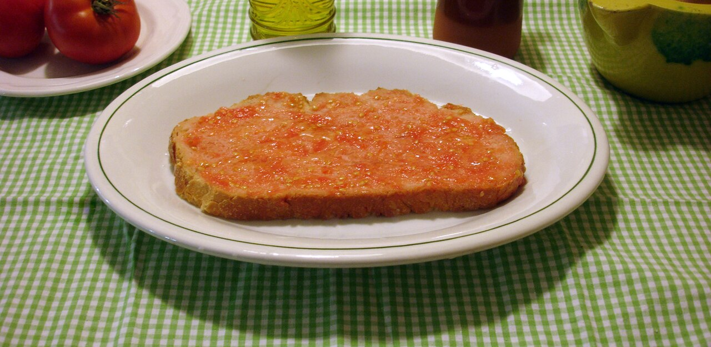
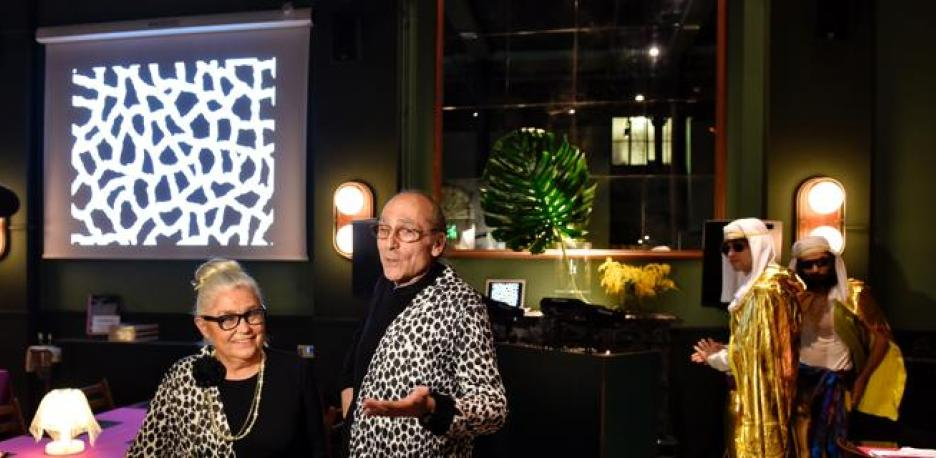
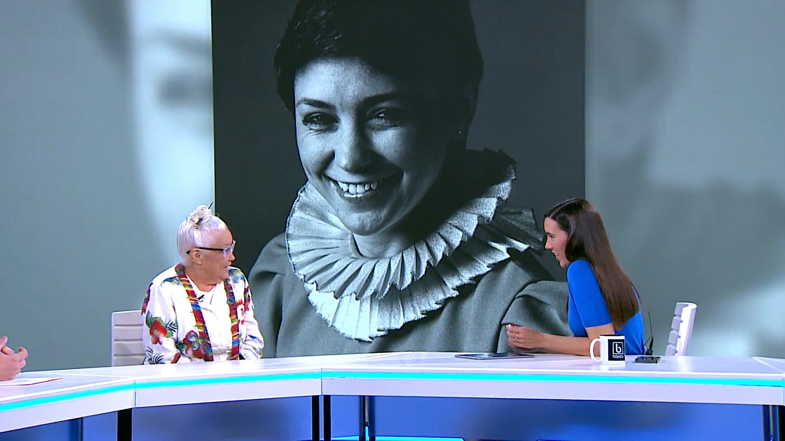
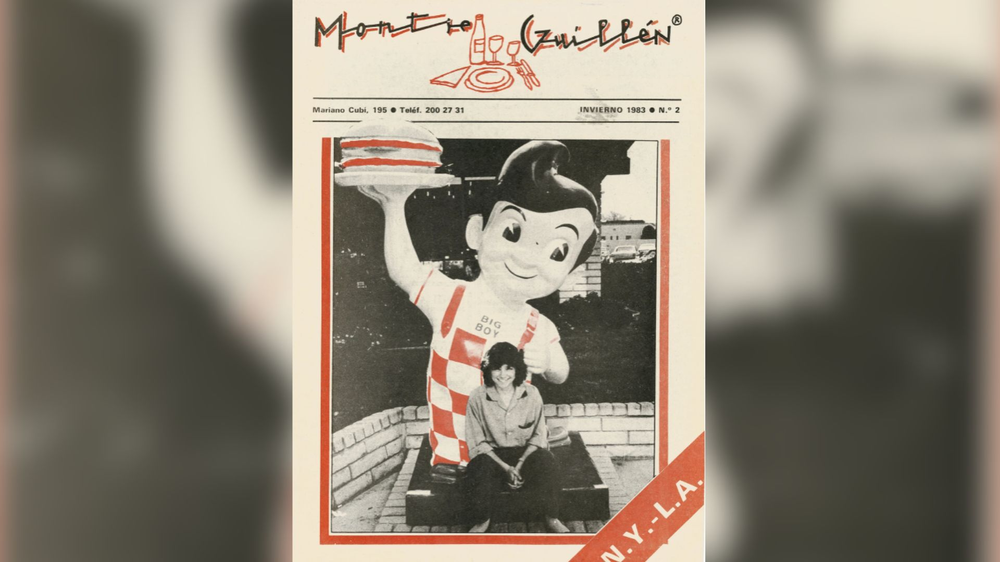

Montse Guillén Pijoan
MG Barcelona (1980) & El Internacional NY (1984) - Pionera tapas USA
De Melilla a conquistar Nueva York. Montse Guillén (1946-2025), hija restauradores Can Borrell (Meranges, ⭐ Michelin), se formó en La Venta (Tibidabo). Año 1980, mundo masculino restauración, abrió **MG** calle Marià Cubí Barcelona: cocina abierta, pescado crudo, diseño Xavier Mariscal/America Sánchez. Referente nueva cocina catalana.
1984, con pareja artista **Antoni Miralda**, fundó **El Internacional Tapas Bar** TriBeCa NY: **primeras tapas/pa amb tomàquet USA**. Éxito masivo artistas neoyorquinos, proyecto arte-culinario que fusionó Barcelona-Manhattan. Expandió Miami, Japón, Alemania, Buenos Aires.
Cofundó **FoodCultura** (2000): sin ánimo lucro, explora cocina-arte-ciencia preservando cultura culinaria. Falleció abril 2025, legando modernización catalana global. Inspiración: mujer audaz rompió techos cristalizados.
Pa amb tomàquet (exportado NY 1984)

Ingredientes (4p)
- Pagès rústico catalán (grueso)
- Tomates maduros rama
- Ajo fresco (opcional)
- AOVE calidad
- Sal Maldon
Preparación (Miralda-Guillén)
- Tostar pagès fuego/horno
- Frotar ajo (sutil), partir tomate mitad
- "Exprimir" tomate hasta miga saturada
- Chorro AOVE generoso + sal escamas
Galería


